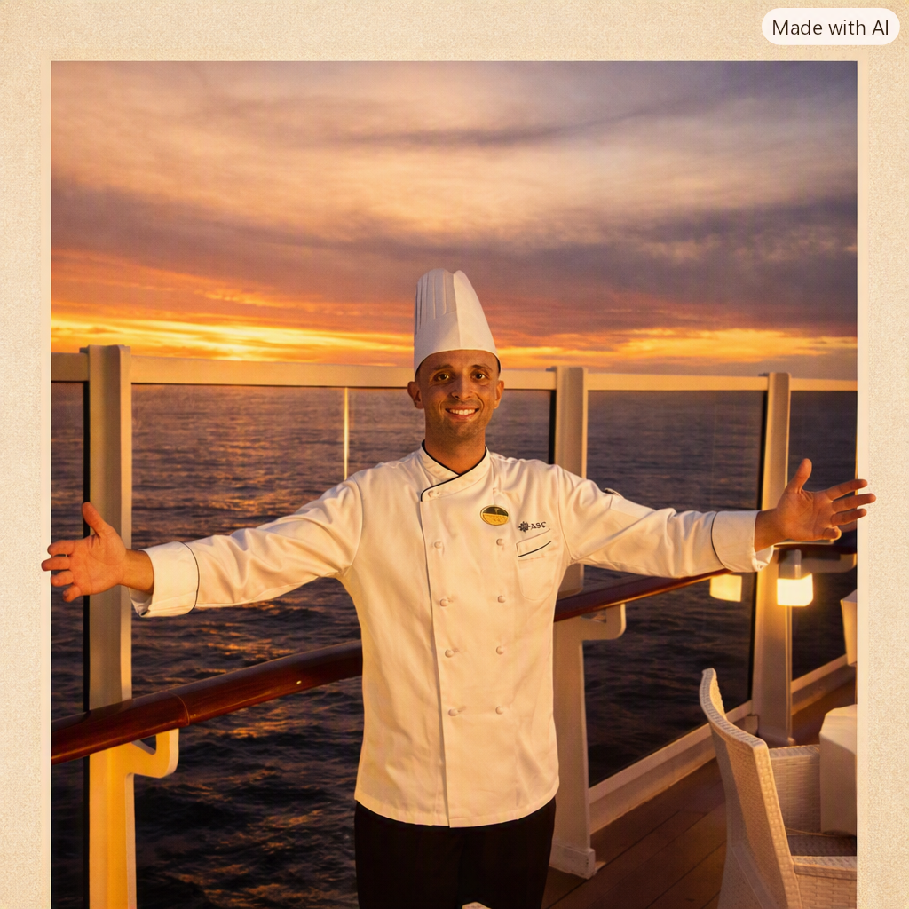
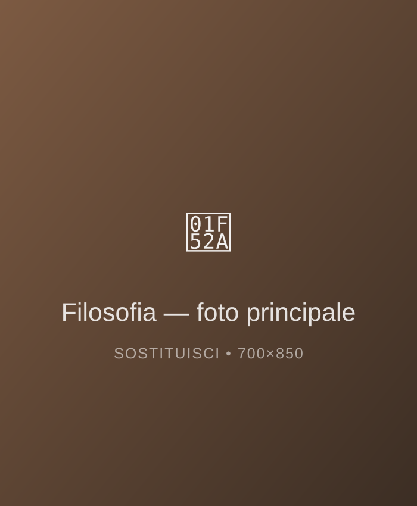
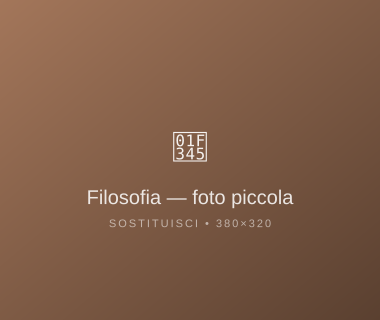

Culinary Consultant
Radici mediterranee,
sguardo
contemporaneo.
Porto la grande cucina italiana nella tua tavola: cene private, eventi esclusivi e menu costruiti sulle stagioni — Milano · Costiera Amalfitana · Costa Smeralda.



Filosofia
Il mio manifesto, in tre capitoli
Sono Mattia, chef da oltre quindici anni tra ristoranti stellati e dimore private. La mia cucina parte dal Mediterraneo: pescato del giorno, verdure di stagione, olio nuovo — e la tecnica resta al servizio del gusto, mai il contrario.
-
01
Radici & Materia Prima
Ogni piatto nasce dalla ricerca spasmodica degli ingredienti migliori dei nostri mari e delle colline italiane.
-
02
Estetica del Silenzio
L'eleganza non necessita di clamore: la tecnica rispetta l'ingrediente senza mai sovrapporsi alla sua natura.
-
03
L'Arte dell'Accoglienza
Portare la grande ristorazione nelle dimore private, creando un'atmosfera intima, fluida e indimenticabile.
La Galleria
Piatti che raccontano il territorio
Il Percorso
Dal cuore della Sila al lusso degli oceani...
-
2024 — 2026
Head Department Yatch Club Attuale
MSC Crociere — Asia · South America
Responsabile del MSC Yatch Club, area esclusiva e privata a bordo delle navi di MSC Crociera.
-
2023 — 2024
Head Department ★ Best Employee Award
MSC Crociere — Europe
Da modificare.
-
2023
Head Chef Best Food Cost Award
Aglio & Olio — Mykonos (Greece)
Partita pesce e grandi eventi sul mare: qui ho imparato che la semplicità è la tecnica più difficile.
-
2022
Sous Chef Mediterraneo
Barz8 Restourant — Bisceglie (Puglia)
Le prime armi tra pescato del giorno e pesto al mortaio: le radici che non ho mai abbandonato.
Contatti
Cuciniamo insieme qualcosa
di memorabile.
Cene private, eventi esclusivi, consulenze per ristoranti. Scrivimi o chiamami: costruiamo insieme il menu perfetto per la tua occasione.